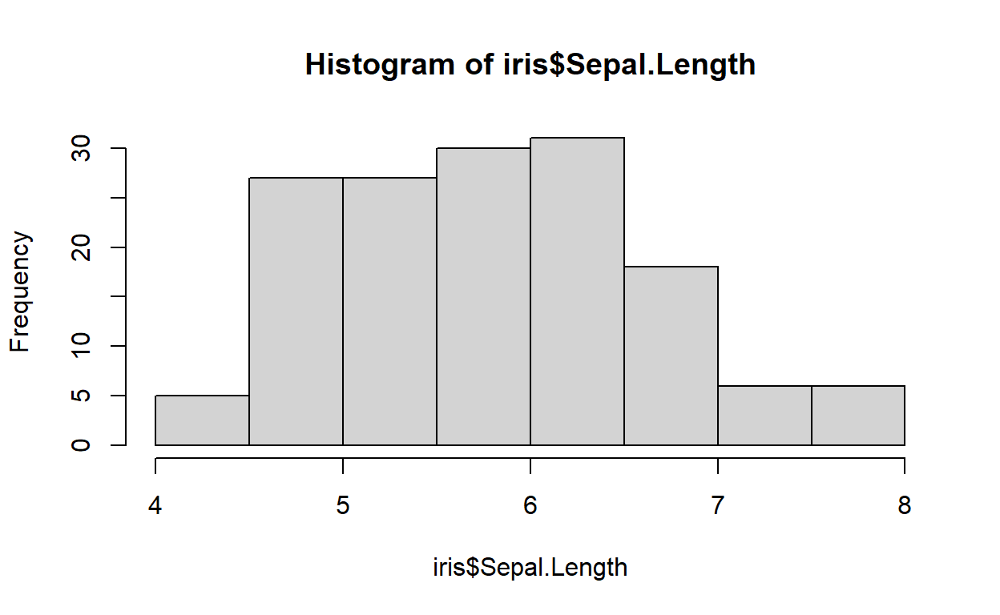
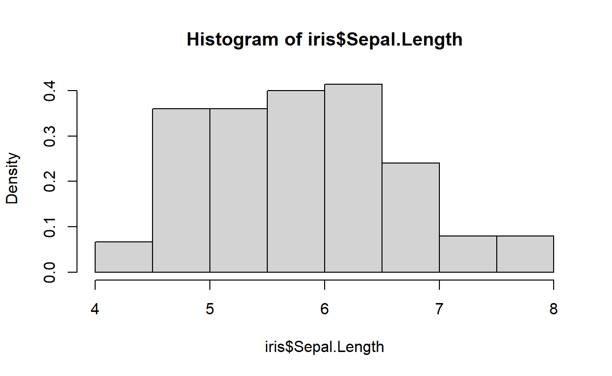
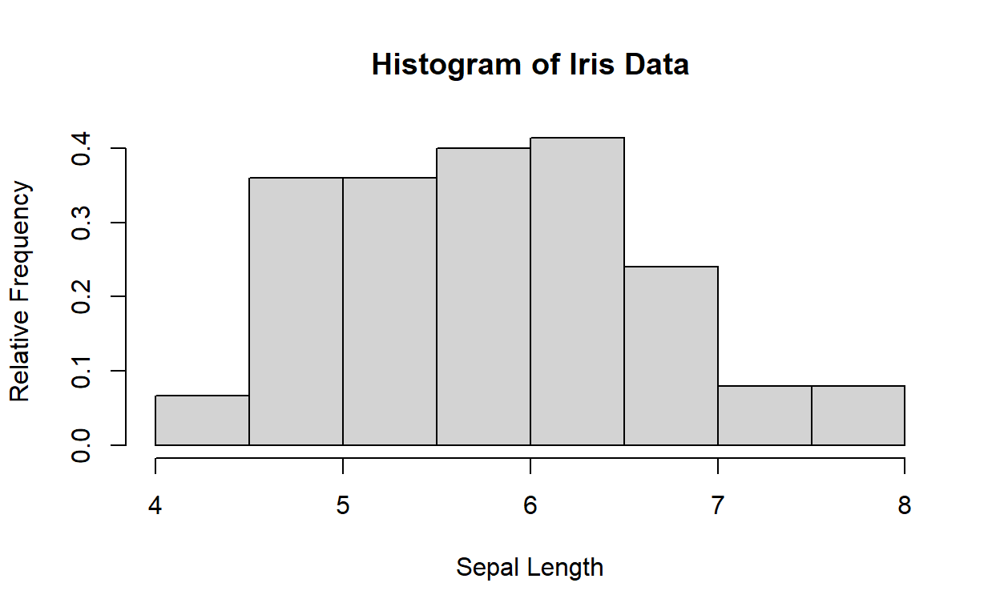
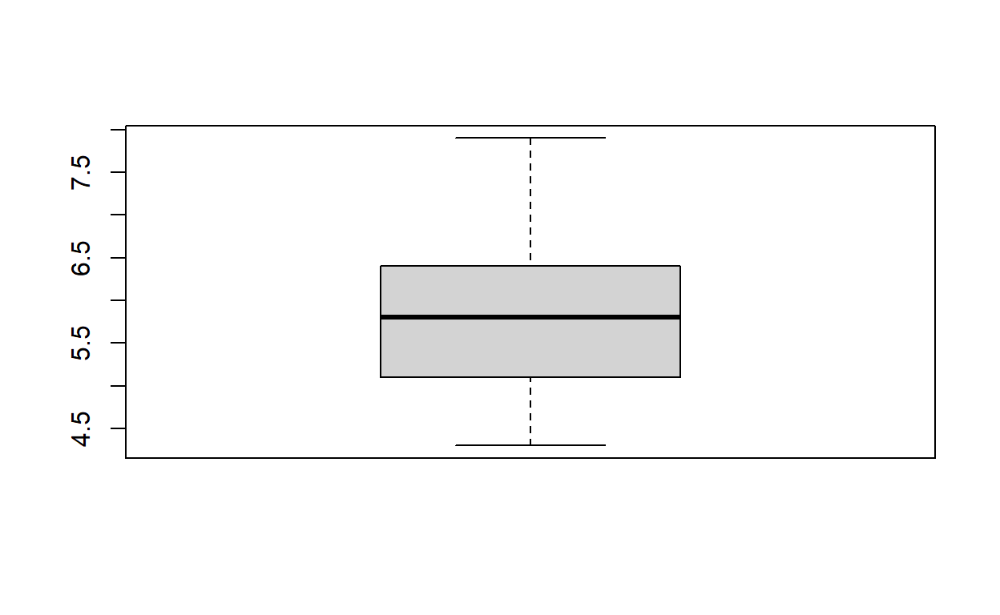
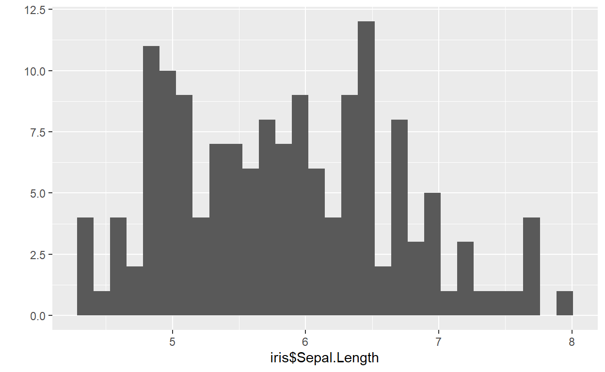
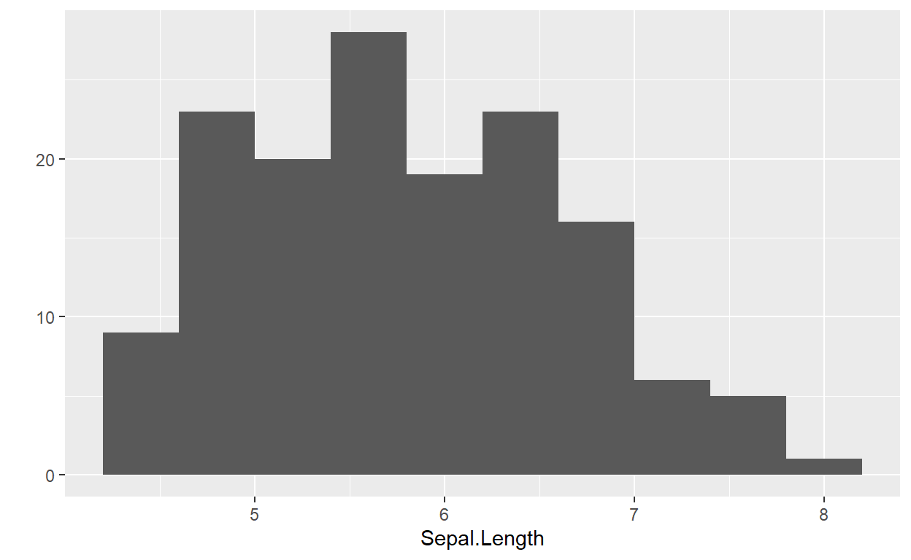
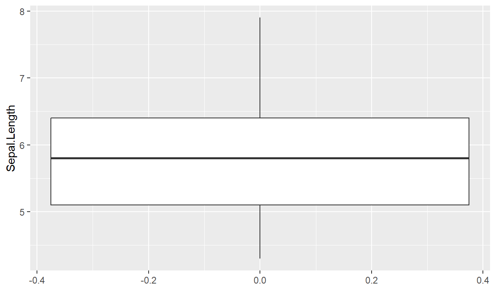
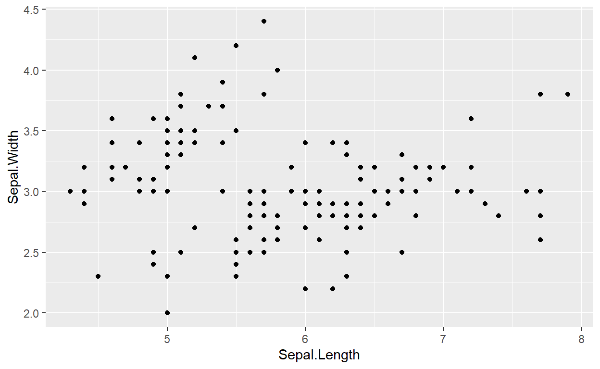
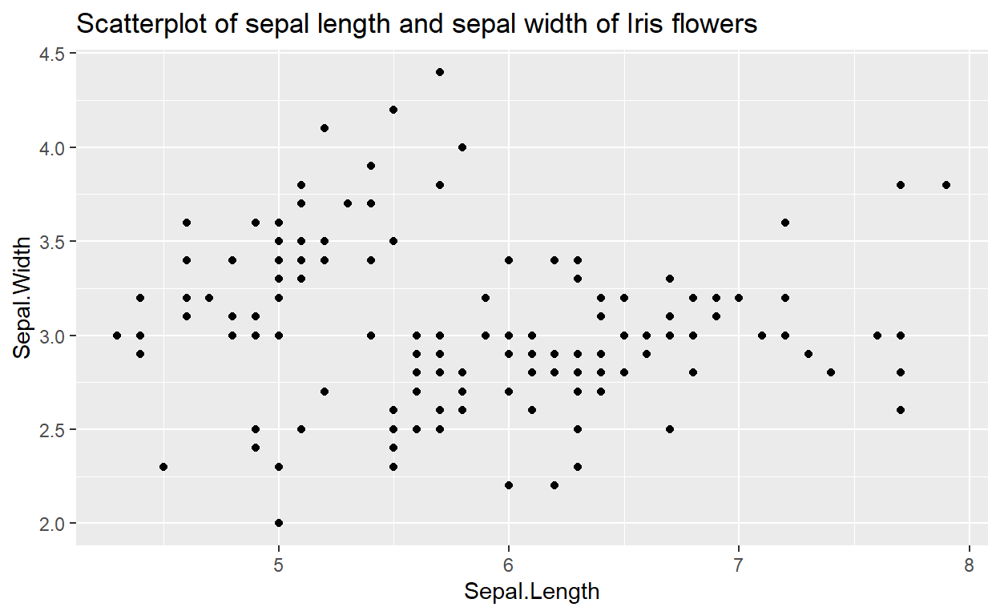

Descriptive Statistics
One of the first steps that you might take once you have some data in
R is to look at descriptive statistics. Remember, the types of
descriptive statistics that you use will be different depending on
whether it is categorical or numerical data. We will look at numerical
descriptive statistics and graphs here; check out the video tutorial in
order to learn about how to do descriptive statistics and graphs for
categorical data.
Example Dataset: Iris
In the examples for this tutorial, we will use the iris
dataset provided in datasets package in R.
head(iris)This is a dataset about measurements in centimeters of the variables sepal length and width and petal length and width, respectively, for 50 flowers from each of 3 species of iris. The species are Iris setosa, versicolor, and virginica. You can find information about the dataset here.
Measures of Center and Spread
Many of the functions for getting numerical summaries of center and spread are intuitive in R.
| Function | Type of Plot |
|---|---|
mean(x) |
Finds the mean of a vector x |
median(x) |
Finds the median of a vector x. |
sd(x) |
Finds the standard deviation of a vector x |
variance(x) |
Finds the variance of a vector x |
IQR(x) |
Finds the IQR of a vector x |
summary(x) |
Finds the minimum, 1st quartile, median, mean, 3rd quartile and
maximum of a vector x, or of each column in a data frame
x |
In general, these are used on a vector, rather than a data frame, so
you’ll need to be careful to specify the correct column within the data
frame. Remember that you can use $ notation to extract a
specific column from the data frame.
mean(iris$Sepal.Length)## [1] 5.843333sd(iris$Sepal.Length)## [1] 0.8280661Practice Problem
How would you find the median sepal length of the iris
flowers?
Plotting with base R
Visualizing Numerical Variables
The basic functions for plotting numerical variables in
R are shown in the table below.
| Function | Type of Plot |
|---|---|
hist(x) |
histogram |
boxplot(x) |
boxplot |
plot(x,y) |
scatterplot |
For example, to get a simple histogram, we can use the following command.
hist(iris$Sepal.Length) 
We can make adjustments to this graph by adding additional
arguments to the hist function. Arguments
are the inputs that we provide a function. Above, we only provided one
argument: the data to be plotted. We can also specify that we want a
different number of bins, for example.
hist(iris$Sepal.Length, breaks = 10) # The "breaks = 10" argument sets the number of bins
Now, suppose we want to use the relative frequency of
the flowers to plot the histogram instead of absolute
frequency in the y-axis. We can provide an argument
probability = TRUE inside the hist function
for the purpose. In that case, the total area under the histogram bins
will sum up to \(1\).
hist(iris$Sepal.Length,probability = TRUE)
We can redefine the names of the axes, or even the name of the plot
using some specific arguments like xlab, ylab
and main. But the names should be provided as a
string i.e. be careful to put “” around the names! For
example,
hist(iris$Sepal.Length, breaks = 10, probability = TRUE, xlab = "Sepal Length",ylab = "Relative Frequency", main ="Histogram of Iris Data")
You can play around with the function hist() to discover
utilities of different arguments! Check the documentation here.
Boxplots
We can make boxplots using the boxplot function.
boxplot(iris$Sepal.Length)
Similar to the case of hist() function, we can add a
title here too. Why not try your hand to put a name to the boxplot?
Practice Problems
Create a boxplot of Petal.Length of the iris flowers and
add a title Boxplot of Petal Length to the plot. Submit
the required code below.
boxplot(iris$Petal.Length,main = "Boxplot of Petal Length")Plotting with qplot
As we mentioned before in the intro-r tutorial, there
are external packages that contain various functions, data, and other
tools to help us do more with R. One of these is the
ggplot2 package, which contains many functions for
generating visually pleasing graphs.
# Run install.packages if you do not have it installed already.
# install.packages('ggplot2')
library(ggplot2)The ggplot2 package is incredibly rich and highly
customizable for an experienced user. There is an entire book you can read through on
using ggplot2 to create graphics, and the code can get
quite complicated. We won’t go over all of that in this short
introduction to producing graphs. Rather, in this tutorial, we’ll focus
on one function, qplot, which is a quick way of getting
nice looking graphs without doing much work.
Using qplot
The idea behind qplot is that it can be used to generate
graphs very quickly using just one function. To do this, it tries to
detect the type of data being plotted, and generates an appropriate
graph based on this. Let’s try using qplot with sepal
length of iris flowers.
qplot(iris$Sepal.Length)## Warning: `qplot()` was deprecated in ggplot2 3.4.0.## `stat_bin()` using `bins = 30`. Pick better value with `binwidth`.
Instead of using breaks as an argument to specify the
number of bins we want for the histogram, we use bins with
qplot. In addition, we can use the data
argument to make it easier to read and parse what is happening in the
function. We show two ways of doing the same thing below, with the first
commented out.
# This is the same thing
# qplot(iris$Sepal.Length, bins = 10)
qplot(Sepal.Length, data = iris, bins = 10)
This made a histogram, exactly like we might have wanted. If we
wanted a boxplot instead, we can add an additional argument to specify
this. Note that we specify y= because we want to plot the
graph on the y-axis. The qplot function for boxplots only
works for putting the continuous variable on the y-axis – in the
categorical-descriptives analysis, we can have side-by-side boxplots
which can show the distributions by group in a categorical variable, and
we’ll have to specify x= there. For now, just remember to
specify y= when using qplot for boxplots.
qplot(y = Sepal.Length, data = iris, geom = 'boxplot')
If we want to make a scatterplot, we can use it very similar to how
we would use plot.
# This does the same thing
# qplot(iris_scores$Sepal.Length, iris$Sepal.Width)
qplot(Sepal.Length, Sepal.Width, data = iris)
Adding a title
We can add a title like we did before using the main
argument.
qplot(Sepal.Length, Sepal.Width, data = iris, main = "Scatterplot of sepal length and sepal width of Iris flowers")
Exercises
Consider the mtcars dataset in package
datasets.
data(mtcars)
head(mtcars)Check the documentation for the dataset here, if needed.
Exercise 1
What is the overall mean of number of cylinders used in the cars?
Exercise 2
What is the mean number of cylinders for cars that have a V-shaped engine?
Exercise 3
Create a histogram of the Miles/gallon for all cars who
had a V-shaped engine. Use 15 bins in the histogram, and use the base R
method (not using qplot).
Hint: This is a two step process. First, you need to subset, then you need to create the graph.
Submitting work
Generate your submission code by putting in your UID in the function below. For example, if your UID is2, then your code should
look like submission_code(UID = 2)
# Replace the number below with your UID
submission_code(2)